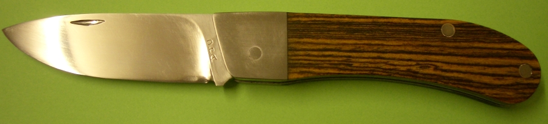
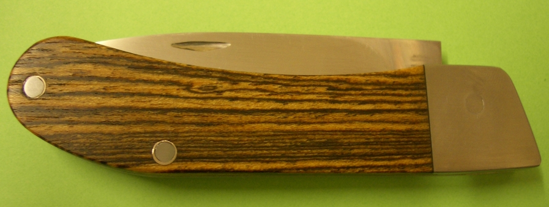
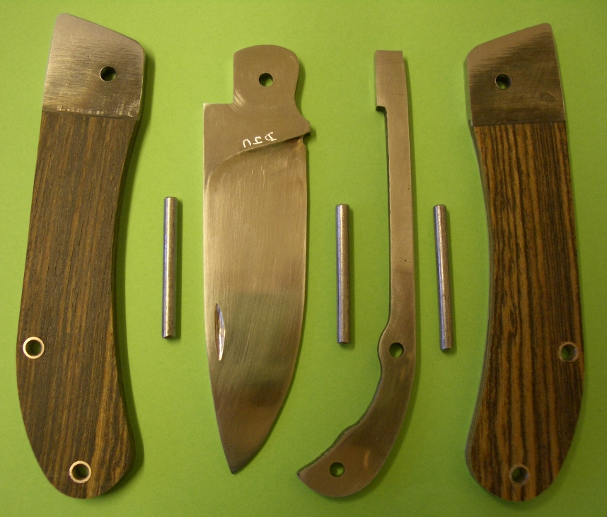

A 3 Inch Penknife
January 2005
I made this penknife to my own design. I made a couple of prototypes first, one in carboard, and one in steel. It works well, but the sharp corner projecting from the handle isn't ideal. The blade is O1 tempered at 350F so it will hold a good edge, and the spring is CS70 tempered at 525F, so it will be tough and flexible. The side plates and rivets are mild steel, and the scales are Mexican Rosewood.
Here are the parts before assembly:
